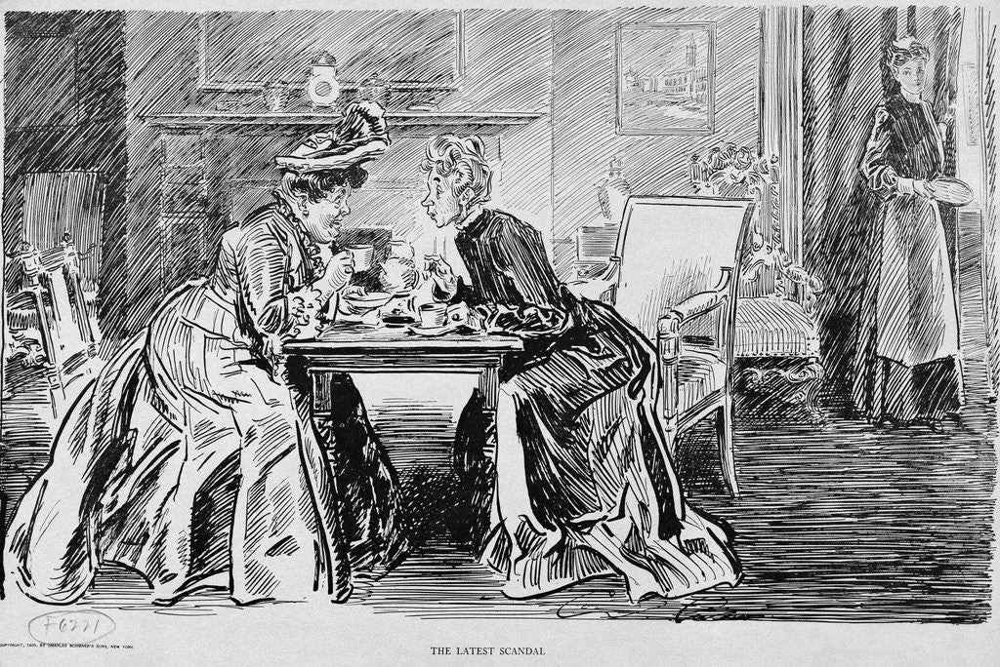

I design and conduct oral history interviews, focusing on labour memory, popular culture, and social change in local communities. I take care of transcription, indexing, and long-term preservation of recordings.

My oral history research moves between sound archives and fieldwork: from the UNESCO candidature for the Cocullo snake ritual, to collecting life stories about football and migration in Rome, to the European ReStory project. A common thread is treating oral sources as heritage to be preserved, indexed, and kept accessible over time.
Researcher, Institute of Oral History, Babeș-Bolyai University (UBB), Cluj, Romania. Oral history fieldwork within the EU Horizon Project ReStory.
Course: “Ethnographic Media Resources Management.”
Researcher, SIMBDEA / Municipality of Cocullo, Italy. Research supporting the candidature for the UNESCO Intangible Cultural Heritage Safeguarding List.
Researcher, University of the Sunshine Coast, Brisbane, Australia. Oral history project on the football experience of migrants in Rome.
Italian Institute for Historical Audiovisual Resources, Rome (✎ exact institution name to confirm). Preservation management (digitisation and analog restoration), metadata and records organisation.
Rome (remotely since 2019). Care of the Circolo's oral sources: preservation, metadata, and valorisation. Full details on the “Archival Projects” page.
✎ If you have audio/video excerpts you'd like to publish (with the relevant interviewee releases), I can embed them here.